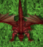

#Simple bot for Ejik game with always tries to get longest sequense of collectables by single click import random import math locations = [Location(141, 635),Location(1176, 89),Location(158, 132),Location(1136, 614)] walls = []#not implemented class Bot: def __init__(self): self.current_pos = self.find_char() def find_char(self): """Find nearest to center blue circle as a "Ejik" """ center = Location(619, 367) findAll(Pattern("warrior.jpg").similar(0.29)) lst = list(getLastMatches()) lst.sort(key=lambda x:math.hypot(center.getX()-x.getX(), center.getY()-x.getY())) return lst[0] def find_collectables(self): """Locate all collectable items on screen """ #TODO coins = [] dragons = [] try: findAll(Pattern().similar(0.65)) coins = list(getLastMatches()) except: pass try: findAll(Pattern().similar(0.42)) dragons = list(getLastMatches()) except: pass return coins+dragons def find_wall(self): #TODO Not implemented for wall in walls: if exists(wall): t = find(wall) click(Location(abs(t.getX())-500,abs(t.getY())-500)) break def find_best_way(self): """Find way with contains the higest number of collectables """ max_count = 0 max_element = None collectables = self.find_collectables() for element in collectables: check_fun = self.current_way(self.current_pos.getX(),self.current_pos.getY(),element.getX(),element.getY()) if not check_fun: continue k = 1 for n_element in collectables: if check_fun(n_element.getX(),n_element.getY()): k += 1 if k > max_count: max_count = k max_element = n_element print('collected :',max_count) return max_element def move_to(self): """Collect or move to a random location """ #self.find_wall() t = self.find_best_way() if t: click(t) else: click(random.choice(locations)) def current_way(self, x_b, y_b, x_e, y_e): """Limits the area of way from character to collectable item in order to chek collision with other collectables. """ try: return lambda x,y: ((x-x_b)/(x_e-x_b)-(y-y_b)/(y_e-y_b)<30 and (x-x_b)/(x_e-x_b)-(y-y_b)/(y_e-y_b)>-30 and x<x_e*math.copysign(1,x_e)+3 and y<y_e*math.copysign(1,y_e)+3 and x>x_b*math.copysign(1,x_b) and y>y_b*math.copysign(1,y_b)) except ZeroDivisionError: return None t = Bot() for i in range(100): print("step ",i) t.move_to() wait(random.randrange(2,10))